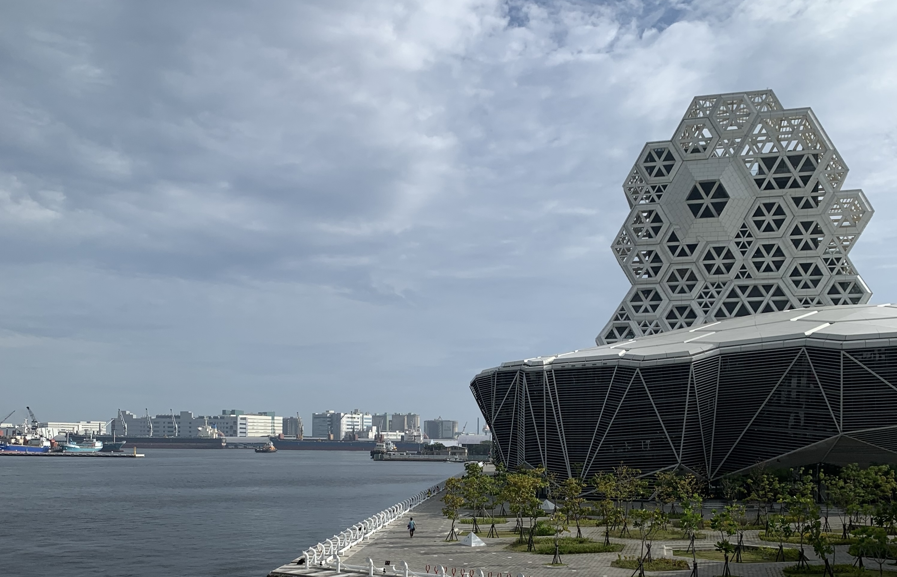

Hello!
Greetings! As announced in my Moving Alert update, I joined the National Kaohsiung University of Science and Technology as an Assistant Research Fellow on July 1, 2026. This transition marks the end of a 12-year journey in the United States as a student, teaching assistant, lecturer, think-tank contributor, consultant, and economist.
I am deeply grateful to the institutions, mentors, colleagues, and policy networks that shaped this path, including the Department of Economics at Syracuse University, the McDonough School of Business at Georgetown University, the Center for Global Trade Analysis at Purdue University, Fox School of Business at Temple University, George Washington University Libraries and the Academic Innovation Department, the Chung-Hua Institution for Economic Research, and partners across Washington D.C., New York, Philadelphia, West Lafayette, and Madrid.
Before my doctoral years in Washington D.C., I earned a master's degree in Economics from Syracuse University in scenic upstate New York. Prior to that, I graduated with honors from National Chengchi University in Taipei, where I completed a combined BS/MS degree in International Business.
As a native of Taiwan, I have long been fascinated by the intersection of economics and politics, especially in the context of international trade. My academic journey has taken me from Taiwan to the United States, where I had opportunities to study and conduct research at leading institutions. I work across economic modeling, computational economics, and econometrics, with particular interest in the impacts of preferential trade agreements and the behavior of multinational firms under globalization.

My dissertation research examines the political economy of trade agreements, with particular emphasis on Taiwan's role in the global economy. Working with outstanding faculty and researchers has deepened my understanding of international economics, and my work has been presented at conferences and workshops across academic and policy communities.
I am passionate about teaching and mentoring students, and I strive to build an engaging and inclusive learning environment. I believe education is a powerful instrument for social progress, and I am committed to helping students develop the analytical skills and policy intuition needed for their careers. Alongside teaching, I continue to collaborate on research projects with scholars and practitioners in Taiwan and abroad.
I also strongly believe that politics and economics are inseparable. Having chances to do research, pass on the knowledge of international economics, and work as an expert to consult with government agencies, are my primary motivations for pursuing a career as an economist. Since I witnessed the economic miracle growing up in Taiwan, where the export-oriented policies exacerbated economic growth and soon triggered democratization, I know the importance of balancing development and distribution in the export-oriented economy. For instance, my project at Academia Sinica revisits the decennial wage rigidity in Taiwan's labor market after Millenium. We found a public misunderstanding of the timing of the economic downturn. Furthermore, after autotomizing compensation trends across the different age groups, we argued that higher education reform in Taiwan shouldn't be responsible for the sluggish growth. Instead, the slowly-adjusted trade and FDI policies under the multilateralism regime were the keys.
On the other hand, the recent increasing frequency and magnitude of the political movements among Asian emerging markets demonstrate another example of the synergy between trade and politics. Economists once advocated regional integration because it benefits developing countries, but multilateralism also embarks on social inequality and backlashes political stability. The core of my research interests is to identify the mechanism by constructing the empirical models to test the country's trade policies and delineate the open economy's political-economic equilibria using theoretical models.
Besides being a Ph.D. student, I am a Lecturer, Economist, Research Assistant, and Graduate Teaching Assistant at the GW Economics Department. During the regular semesters, I am also responsible for coordinating the discussion sessions of M.S. Program in Applied Economics. I like to help students construct empirical models and solve the various economic problems in the real world and treat teaching courses as another fashion for me to learn. Besides using various statistical packages like Stata, R, and SAS, I have taken courses such as Real Analysis, Advanced Microeconomics, and Macroeconomics. After being named the principal teaching assistant of the Master's Program in Applied Economics, I help students solve problems and hold weekly office hours for those enrolling in the master-level Probability and Statistics, Applied Microeconometrics, and Time Series Analysis. Furthermore, I taught a graduate-level Survey of International Economics (syllabus) via Blackboard Ultra virtual environment in Summer 2020.
I participate in most academic seminars and workshops in GW Economics. I am a member of H. O. Stekler Research Program on Forecasting and Student Association for Graduate Economists (SAGE). Outside GW, I hold student memberships of American Economics Associations (AEA), International Trade and Finance Association (IT&FA), National Association of Business Economics (NABE), The National Society of Leadership and Success (NSLS), and Southern Economics Association (SEA).
This webpage is subject to Digital Millennium Copyright Act